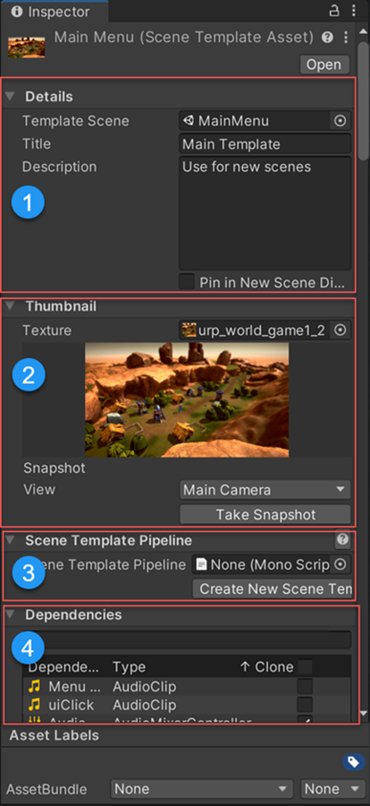
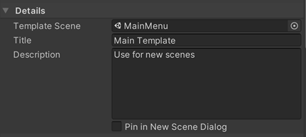
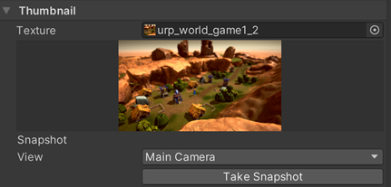
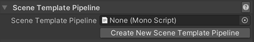
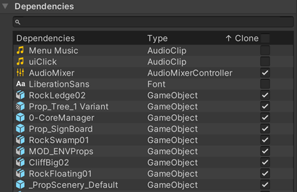

要编辑场景模板，请在 Project 窗口中选择该模板，然后在 Inspector 窗口中将其打开。
| 注意： |
|---|
| When you first create an empty scene template, you must edit its properties to associate it with a scene before you can use it. Templates that you create from the active scene, or an existing scene asset, have some properties set by default. |

场景模板 Inspector
场景模板 Inspector 包含以下部分：
1.Details：指定模板使用哪个场景，并包含模板的描述，该内容将出现在 New Scene 对话框中。 1.Thumbnail：提供用于为模板创建预览图像的选项。 1.Scene Template Pipeline：指定在 Unity 从模板创建新场景时运行的可选自定义脚本。 1.Dependencies：列出模板场景的依赖项，并指定 Unity 在从模板创建新场景时是否克隆它们。
使用 Details 部分指定要用于模板的场景，并控制模板在 New Scene 对话框 中如何显示。

| 属性： | 描述： | |
|---|---|---|
| Template Scene | 指定要用作模板的场景。可以是项目中的任何场景。 | |
| Title | 模板的名称。您在此处输入的名称将出现在 New Scene 对话框中。 | |
| 描述 | 模板的描述。您在此处输入的描述将出现在 New Scene 对话框中。 | |
| Pin in New Scene Dialog | 控制此模板是否在 New Scene 对话框 中固定。 固定模板始终显示在 Scene Templates in Project 列表的顶部。 |
|
Thumbnail 部分包含用于为模板创建预览图像的选项。预览图像将出现在 New Scene 对话框中。

| 属性： | 描述： | |
|---|---|---|
| Texture | 指定要用作此模板缩略图的纹理资源。项目中的任何纹理资源均可使用。 如果您不分配纹理，模板将使用默认场景模板资源图标。 |
|
| [缩略图预览] | 显示模板的缩略图纹理（如果有）。 | |
| Snapshot | 提供用于为此模板捕获缩略图的选项。 | |
| View | 指定捕获 Main Camera 视图还是 Game 视图。 | |
| Take Snapshot | 单击此按钮可捕获选定的视图。 | |
使用这些属性可将一个场景模板管线脚本添加到此模板。

场景模板管线脚本可让您在从模板创建新场景时执行自定义代码。请参阅自定义新场景创建。
本部分列出了模板场景的所有依赖项。您可以指定从模板创建一个新场景时是否克隆每一个依赖项。
To search for a dependency by name, enter text in the search bar.
To sort the Dependencies list:

For each dependency in the list, toggle the Clone option on to clone the dependency, or off to reference the dependency. When you clone a dependency, you create a copy. When you reference a dependency, all changes made to the original will affect the dependency.
当您从模板创建新场景时，Unity 会检查模板场景是否具有可克隆的依赖项。如果有，Unity 会创建一个与新场景同名的文件夹，并将所有克隆的依赖项放在该文件夹中。
有关克隆和引用的依赖项的更多信息，请参阅模板和场景依赖项。
要指定默认情况下 Unity 克隆的资源类型，请编辑场景模板项目设置。